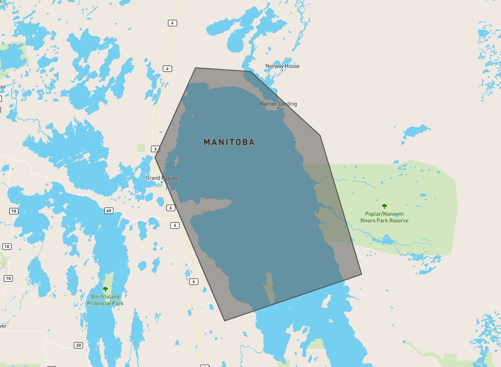

Example Usage#
Simple Example Paramset#
Our study area is Northern Lake Winnipeg and we have constructed a geojson polygon using geojson.io (made possible by the folks at Mapbox)
{kind=link}
The geojson file that the above image displays can be found here
We are also only interested in RCM imagery from August 15 2020 to August 22 2020 for our analysis.
Command-Line Interface (CLI)#
First we run a query to see what’s available
$ eodms -c RCM -s 2020-08-15 -e 2020-08-22 -g lakewinnipegnorth.geojson --dump-results
2020-12-23 10:34:09 | eodmsapi.cli | INFO | Querying EODMS API
Fetching result metadata: 100%|████████████████████████████████| 26/26 [00:04<00:00, 5.30item/s]
2020-12-23 10:34:18 | eodmsapi.cli | INFO | Finished query. 26 results
2020-12-23 10:34:18 | eodmsapi.cli | INFO | Saving query results to file: ./query_results.geojson
We can then inspect the query_results.geojson in Python or GIS software (like QGIS) to see if it satisfies our needs. If there are no modifications to be made, we can submit the order as-is
$ eodms -c RCM -s 2020-08-15 -e 2020-08-22 -g lakewinnipegnorth.geojson --submit-order
After order submission, you will receive emails from EODMS on the status of your order. Once your order status has changed to “Complete”, take note of the Order ID in the Delivery Notification email and supply it to the CLI
$ eodms -c RCM --order-id <order_id>
Interactive Python#
Just like in the command-line example, we first run a query to see what’s available
>>> from eodms_api_client import EodmsAPI
>>> client = EodmsAPI(collection='RCM')
>>> client.query(start='2020-08-15', end='2020-08-22', geometry='lakewinnipegnorth.geojson')
Fetching result metadata: 100%|████████████████████████████████| 26/26 [00:09<00:00, 2.70item/s]
>>> len(client.results)
26
Since we are already in Python, we can do some exploration of the results in order to filter out any scenes we won’t be needing
# let's see what kind of beam modes are available
>>> client.results.groupby('Beam Mode Type')['Granule'].agg('count')
Beam Mode Type
Medium Resolution 30m 2
Medium Resolution 50m 23
Quad-Polarization 1
Name: Granule, dtype: int64
# we like the sound of the 30m and quad-pol products. Let's subset to just those
>>> subset = client.results.loc[client.results['Beam Mode Type'] != 'Medium Resolution 50m']
>>> len(subset)
3
# let's make sure that the 3 scenes left have decent overlap with our area-of-interest (AOI)
>>> import geopandas as gpd
# project to meters (UTM 14N WGS84) for area calculations
>>> aoi = gpd.read_file('lakewinnipegnorth.geojson').to_crs('epsg:32614')
>>> subset = subset.to_crs(aoi.crs)
>>> subset['overlap_area'] = subset.intersection(aoi.unary_union).area
>>> subset['overlap_pct'] = subset['overlap_area'] / subset.area
>>> subset['overlap_pct']
3 0.887386
8 0.015402
18 0.962696
Name: overlap_pct, dtype: float64
# there is 1 scene that has less than 2% of its area overlapping with our AOI
# so let's remove it!
>>> subset = subset.loc[subset['overlap_pct'] > 0.1]
# now we extract the EODMS record Ids for our 2 scenes and submit our order
>>> record_ids = subset['EODMS RecordId'].tolist()
>>> order_ids = client.order(record_ids)
Same as with the CLI example, we wait for the “Order Complete” email and provide the Order Id to our client.
>>> client.download(order_id)
Downloading RCM data more quickly with the EODMS DDS#
Warning
This method is still considered beta and may act unpredictably.
For the RCM image collection, there is a new system for downloading requested datasets that involves using the uuid in the search results rather than the EODMS RecordId field.
To use the new system, provide the uuid values for each granule you’re interested in to the new EodmsAPI.download_dds function:
# using the same 'subset' variable from the prior example
>>> uuids = subset['uuid'].tolist()
# download the granules to the current directory, using 6 parallel threads
>>> client.download_dds(uuids, output_directory=".", n_workers=6)
The granules will be downloaded without the need to submit an order and wait for subsequent fulfillment email notifications.
If you prefer to use the client from outside an interactive Python REPL, you may either use the --uuid or --uuid-list command-line arguments:
# download a single RCM granule to current directory given its UUID
$ eodms -c RCM --uuid <uuid-hash> -o .
# download a list of UUIDs to current directory using a line-delimited textfile using 6 threads
$ eodms -c RCM --uuid-list <path-to-text-file> -o . --n-dds-workers 6